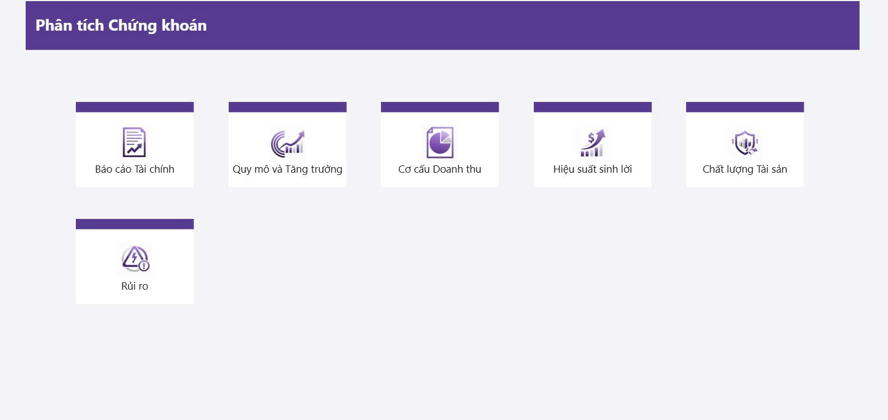
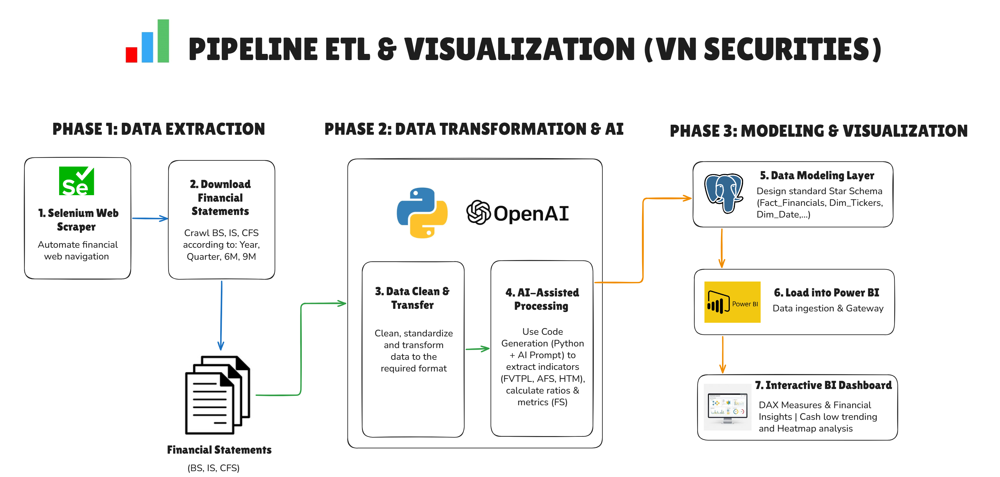
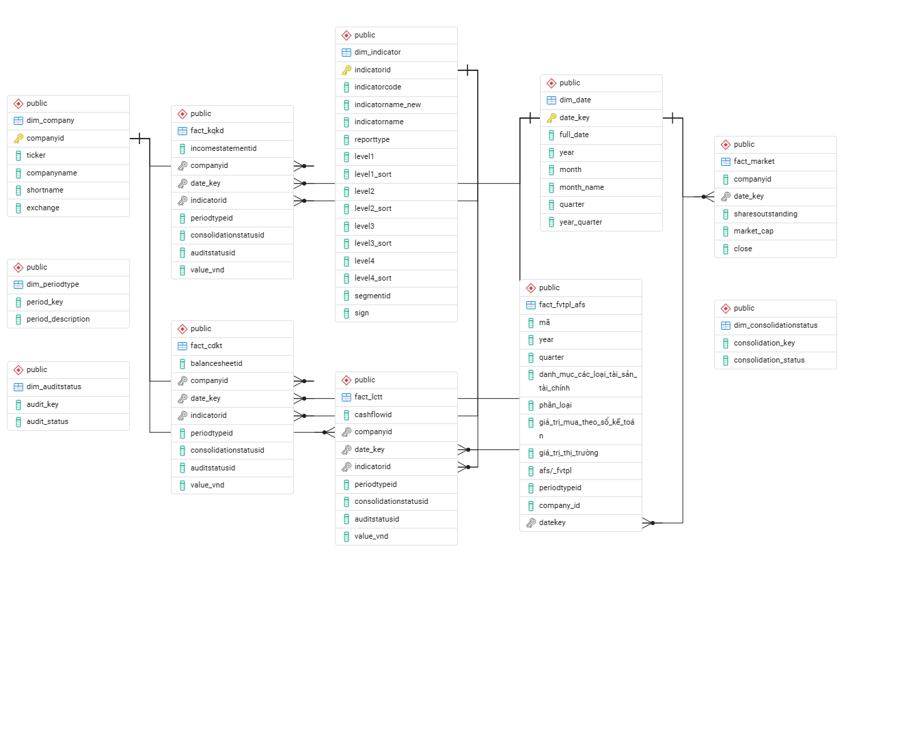

Dashboard BCTC & danh mục tự doanh trực quan.
Financial Data Analyst · Vietnam
👋 Võ Phước Nhật
Phát triển giải pháp dữ liệu và báo cáo tự động cho lĩnh vực Tài chính & Chứng khoán. Tập trung vào Financial Data Engineering, Algo Trading và tự động hóa pipeline dữ liệu cho thị trường chứng khoán Việt Nam.
Hồ sơ cá nhân
Từ tài chính đến kỹ thuật dữ liệu
“Xuất phát từ nền tảng tài chính, tôi chuyển hướng sang kỹ thuật dữ liệu vì nhận ra rằng dữ liệu tốt mới tạo ra quyết định tốt. Tôi thích giải quyết những bài toán thực tế — lấy dữ liệu lộn xộn, làm sạch, mô hình hóa và biến nó thành thứ người dùng có thể đọc và hiểu ngay.”
Thế mạnh chuyên môn
Star Schema & DAX measures cho chỉ số tài chính.
ETL tự động: SSI/PDF → PostgreSQL → Power BI.
Selected work
Dự án tiêu biểu
Các dự án phân tích dữ liệu tài chính, tự động hóa và mô hình giao dịch.

Project 01 · Financial reporting
📊 Phân tích BCTC Chứng Khoán Việt Nam
Hệ thống tự động thu thập, xử lý và phân tích Báo cáo tài chính của các công ty chứng khoán Việt Nam; tập trung vào FVTPL, AFS và hiệu quả hoạt động.
🎯 Bối cảnh & Nhiệm vụ (STAR)
Situation: Dữ liệu BCTC công ty chứng khoán nằm rải rác trong PDF và có cấu trúc thay đổi giữa các công ty, kỳ báo cáo.
Task: Chuẩn hóa dữ liệu toàn ngành thành mô hình phân tích nhất quán, hỗ trợ so sánh theo công ty, kỳ và chỉ tiêu.
⚡ Hành động & Kết quả
- Crawl và chuẩn hóa BCTC từ SSI bằng Python.
- Thiết kế Dim/Fact theo Company, Date và Item.
- Xây dựng measures DAX cho giá trị, YoY/QoQ và hiệu suất.
- Trích xuất thuyết minh FVTPL & AFS bằng Python kết hợp AI.
- Dashboard theo module, hỗ trợ cross-filter và drill-down.
🔄 Quy trình ETL & Kiến trúc Dữ liệu
Luồng dữ liệu đi từ BCTC phi cấu trúc, qua pipeline thu thập và làm sạch, mô hình PostgreSQL Star Schema, lớp DAX và báo cáo Power BI.

💻 Data acquisition
Pipeline Python thu thập dữ liệu BCTC từ SSI, kiểm tra kỳ báo cáo và chuẩn hóa tên công ty, chỉ tiêu, đơn vị.
🧱 Data modeling
Star Schema tách Dim_Company, Dim_Date, Dim_Items và bảng Fact values để tối ưu phân tích đa chiều.

Repository trong source hiện tại đang dùng liên kết “#”, vì vậy không tạo liên kết GitHub giả.
Project 02 · Algo trading
📉 VN30F1M Intraday Hedging System
Hệ thống phân tích và cảnh báo tín hiệu Short phái sinh VN30F1M theo thời gian thực, kết hợp ETL dữ liệu 1 phút, state machine, backtesting và email alert.
🎯 Bối cảnh & Nhiệm vụ
Situation: Giao dịch VN30F1M intraday biến động nhanh; quyết định thủ công khó đồng nhất và dễ chịu ảnh hưởng cảm xúc.
Task: Xây dựng hệ thống tự động thu thập dữ liệu, phát hiện tín hiệu Short và đưa ra cảnh báo vào/ra lệnh.
⚡ Hành động & Kết quả
- ETL OHLCV 1 phút từ SSI FastConnect, chuẩn hóa bằng R data.table.
- Tín hiệu Short dựa trên MA spread ratio, negative streak và Signal5.
- State machine WAIT_SHORT ↔ WAIT_OUT.
- Backtest và walk-forward validation để tối ưu tham số.
- Email alert realtime và báo cáo cuối ngày.
WAIT_SHORT
Chờ spread vượt ngưỡng âm, streak thỏa điều kiện và có xác nhận để phát tín hiệu Short.
WAIT_OUT
Theo dõi điều kiện thoát lệnh, ghi nhận PnL, cập nhật trạng thái và quay lại vòng chờ mới.
Source chính sử dụng R cho pipeline và signal engine, kết hợp SSI FastConnect và cơ chế gửi email cảnh báo.
Xem Repository trên GitHub🏗️ Signal Visualization
📊 Kết quả Backtest & Tối ưu hóa tham số
Các ngưỡng phân loại được giữ nguyên từ source Streamlit. Dữ liệu backtest gốc nằm tại assets/data/data-backtesting.xlsx để tải xuống và kiểm chứng.
📨 Email Alert Realtime
Phát hiện điều kiện Short hợp lệ với mức giá, spread ratio, streak và thời điểm vào lệnh.
Thông báo thoát lệnh, kết quả trade và tổng PnL tạm tính trong phiên.
Tổng số trade, Win/Loss, win rate, total PnL, best/worst trade và tham số đã dùng.
Chia sẻ
🧠 Góc Chia Sẻ Kiến Thức
Kinh nghiệm thực tế, mẹo lập trình và các bài viết sâu về phân tích dữ liệu tài chính & tối ưu hóa Power BI.
💡 Tips Ngắn & Thủ Thuật
Tối ưu hóa hiệu năng DAX với KEEPFILTERS
Khi viết điều kiện lọc đơn giản trong CALCULATE, mặc định nó thay thế bộ lọc hiện tại. KEEPFILTERS giữ ngữ cảnh ngoài và giao thoa với bộ lọc mới.
Thiết kế Star Schema thay vì Flat Table
Tách Dim_Items và Dim_Company giúp DAX tăng trưởng YoY/QoQ ngắn gọn và tái sử dụng dễ dàng hơn.
📚 Bài Viết Phân Tích Sâu
Thiết kế Schema Dữ liệu BCTC Ngành Ngân Hàng
Võ Phước Nhật · 5 phút đọcThiết kế bảng Fact cân đối kế toán kết hợp phân bổ theo kỳ hạn và nhóm nợ, hỗ trợ drill-down thuyết minh dư nợ.
Tự động hoá trích xuất Thuyết minh BCTC bằng Python & AI
Võ Phước Nhật · 7 phút đọcPipeline RAG kết hợp OCR độ phân giải cao để phân tích và trích xuất danh mục FVTPL, AFS.
Liên hệ
👤 Thông Tin Liên Hệ & Kỹ Năng
Kết nối với mình hoặc tìm hiểu thêm về các công nghệ mình đang sử dụng.
- Họ và tên: Võ Phước Nhật
- Email: nhat.vophuoc@gmail.com
- LinkedIn: linkedin.com/in/phuocnhat1011
- GitHub: github.com/phuocnhat1011
🛠️ Bản Đồ Kỹ Năng
Power BI · DAX · Power Query · Data Modeling · Dashboard UX/UI
Python · SQL · R · Pandas / NumPy · LangChain (RAG) · Git / GitHub
Financial Statements Analysis · NIM, NPL, CAR · FVTPL, AFS, HTM
PostgreSQL · Snowflake · Excel (Advanced) · Docker